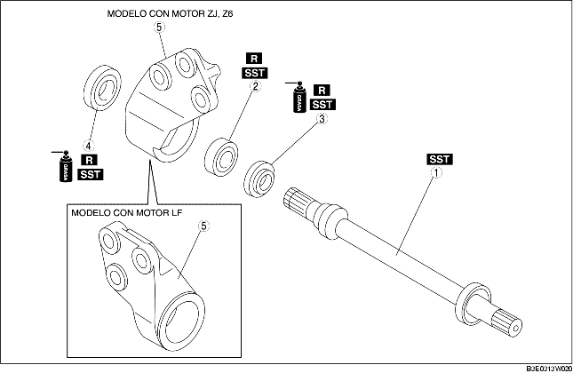

1. Desmontar según el orden indicado en la tabla.
2. Montar en el orden contrario al del desmontaje.

.
|
1
|
Junta cardánica
(Véase Detalles de montaje junta cardánica).
|
|
2
|
Cojinete
(Véase Detalles de desmontaje cojinete).
(Véase Detalles de montaje cojinete).
|
|
3
|
Guardapolvo (izquierdo)
|
|
4
|
Guardapolvo (derecho)
|
|
5
|
Soporte
|
1. Quitar la junta cardánica con una prensa.
1. Quitar el cojinete y los guardapolvos (derecho/izquierdo) con las SST.
2. Si el cojinete se queda en la junta cardánica, colocar la SST y la junta cardánica en la prensa.
1. Aplicar grasa al borde del nuevo guardapolvo.
2. Instalar el nuevo guardapolvo (derecho) con las SST.
1. Instalar un nuevo cojinete mediante la SST.
1. Aplicar grasa al borde del nuevo guardapolvo.
2. Instalar el nuevo guardapolvo (izquierdo) con una placa de acero y las SST.
1. Montar la junta cardánica con la SST y una prensa.